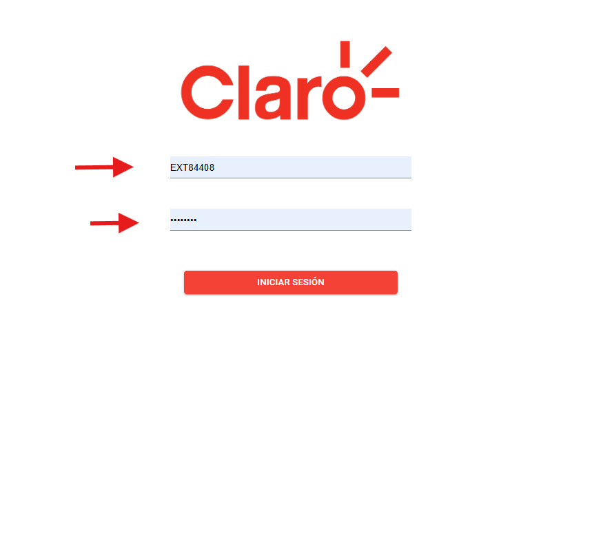
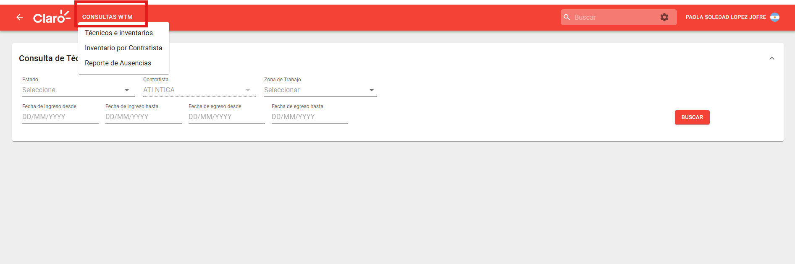
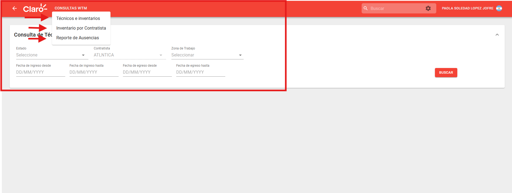
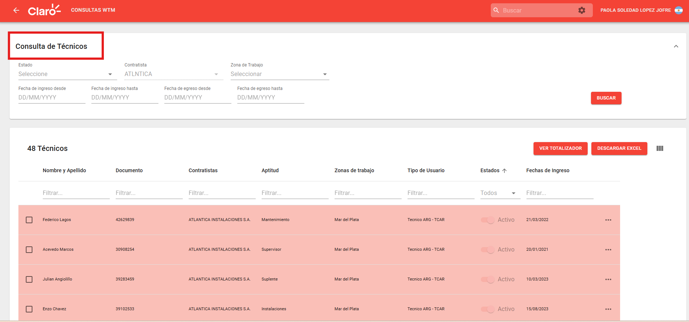
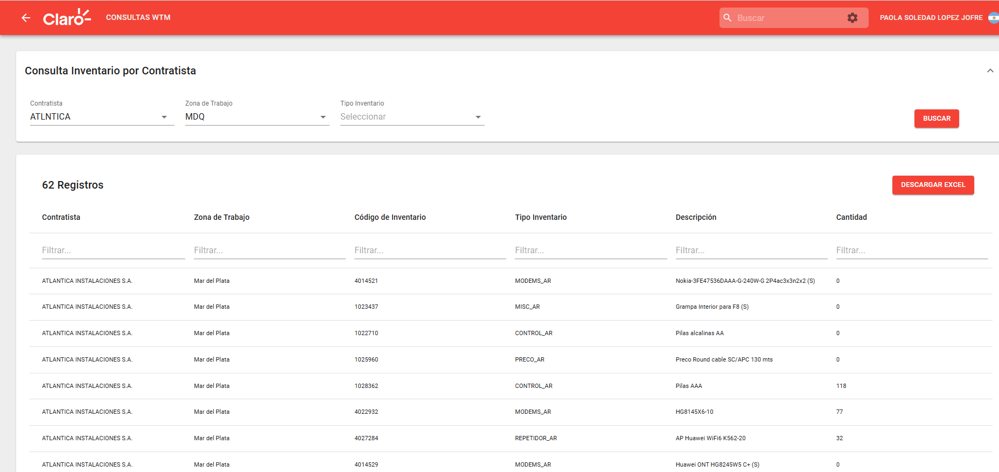

Este instructivo detalla el uso de la plataforma WTM (Work Technical Management) para la gestión de materiales del almacen de las contratista y la asignacion de los mismos para los tecnicos.
Para ingresar a la plataforma, acceda a través del siguiente enlace:
Inicie sesión utilizando su usuario de red y la contraseña correspondiente.

INTERFAZ DE LOGINDentro del sistema, diríjase al menú superior y seleccione CONSULTAS WTM.

MENÚ DE CONSULTAS WTM E INVENTARIOSEn el panel desplegable podras seleccionar los diferentes segmentos:
- Tecnicos e Inventarios.
- Inventario por Contratista.
- Reporte de Ausencias.

VISTA GENERAL DE LA ORDEN DE TRABAJOPodras observar en Consulta de Técnicos la informacion completa sobre los tecnicos y sus inventarios.

PANEL DE OBSERVACIONES Y DOCUMENTACIÓNConsulte la sección inferior para ver el Historial de Movimientos, donde se detalla la trazabilidad, asignaciones a contratas y estados históricos.

TRAZABILIDAD Y ESTADOS DE LA ORDEN